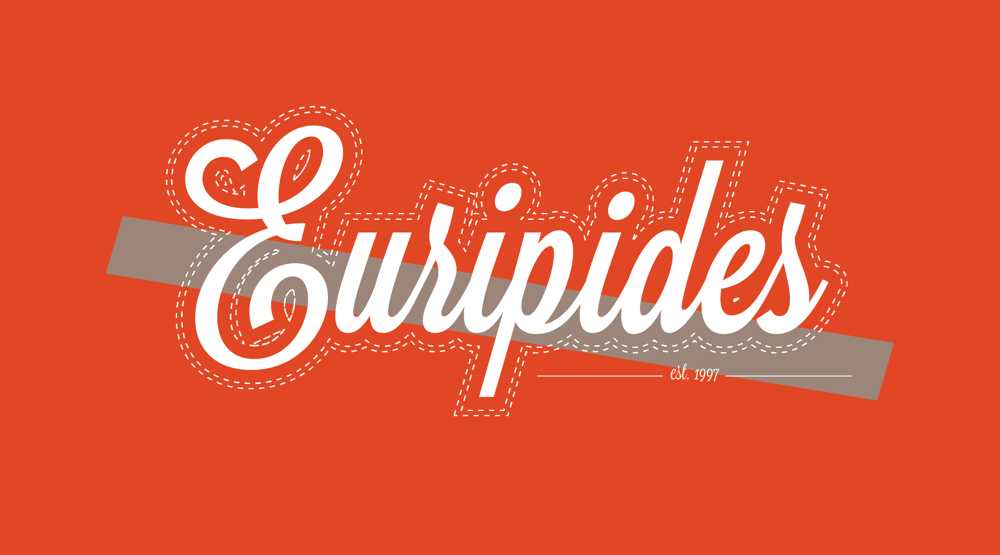
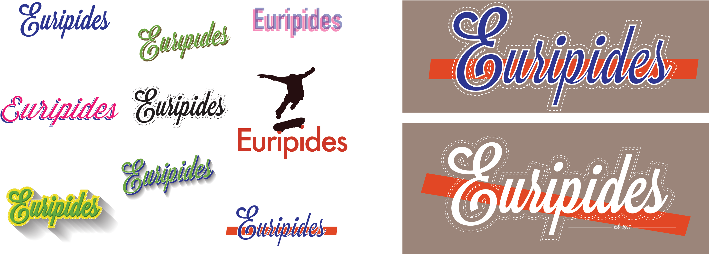
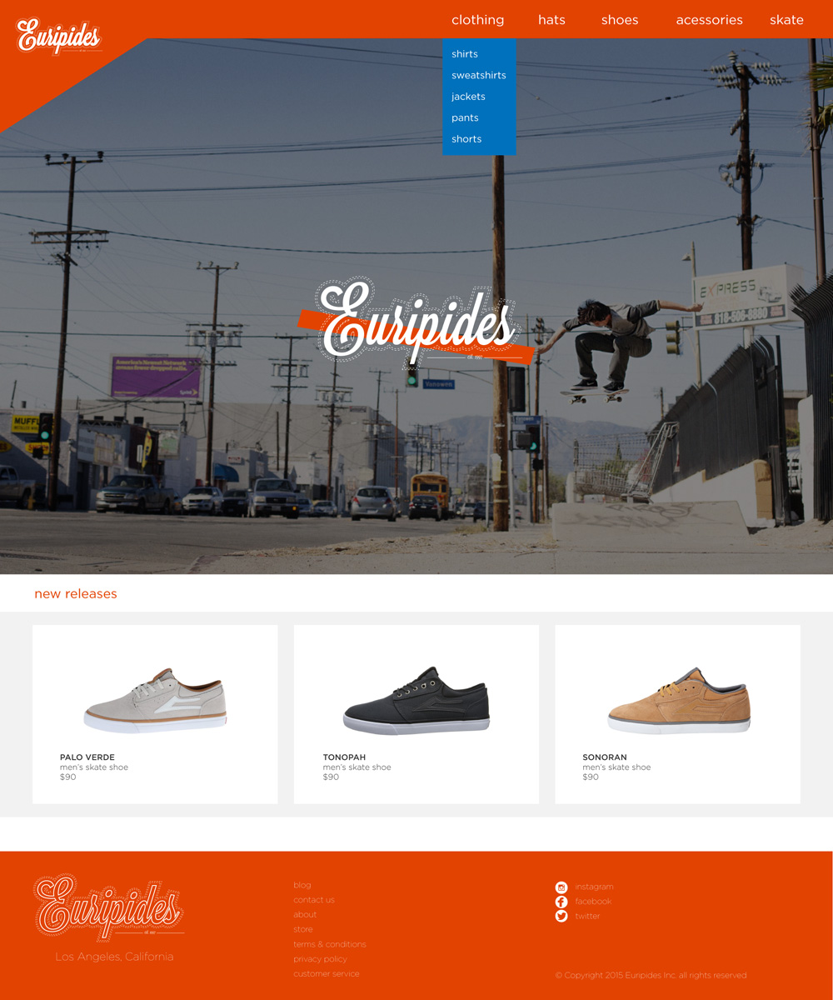

EURIPIDES
Identity & Web Design
This project involved creating a fictitious company, project packaging and a piece of promotional material. I chose to create a high end skate company, primarily because it would offer me chance to try something different.
Process
I settled on the name Euripides (after the Greek playwright) primarily because I liked the sound and the way it looked in print, but also because I felt it appropriate, given his work that blurred the lines between gods and normal men and women. It seemed to fit a company who's purpose is to sell tools of speed and adventure. I started with a series of script type faces to counter the clean sans serif look of most skate companies. Typical to how I normally work, I would end up taking small bits from various type experimentations and pull them together into the final product.

Website
The final piece of the project was to create some for of promotional material i.e. a flyer or poster. I took it a step further by creating a website. While not going so far as to fully write a backend (something a tad bit out of my scope anyway), I did fully build a landing and product page for my fictions company. My reasons were twofold: first off, I felt that, realistically, in today’s world, a web presence is much more valuable than printed advertisement, and secondly, I simply enjoy making websites.
